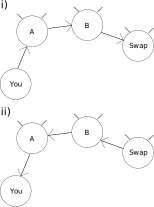

Updated: 2023-12-16
Introduction
This writeup is of interest to Lightning Network developers who want to make their own “autopilot”, as well as existing node operators who take on the role of node manager as well (a role which CLBOSS seeks to take over via automation).
Selecting channel candidates and investigating their uptime is all well and good, but at some point we need to make channels to get our sweet, sweet liquidity into the Lightning Network.
We divide channel creation into two parts:
Boss::Mod::ChannelCreationDecider— algorithm to determine when to create channels.Boss::Mod::ChannelCreator— algorithm to get channel candidates, figure out how to distribute our funds, and actually build channels.
Deciding To Create Channels
The decision to create, or not create, channels right now is a mix of a
number of inputs.
The Boss::Mod::ChannelCreationDecider not only decides whether
to create a channel then and there, it also decides how much to put
into channels.
Thus, Boss::Mod::ChannelCreationDecider cannot be described
in isolation; we need to discuss a few other modules that feed data into
the decider module, as well as some sticky points that affect its
design.
Minimum Funds To Leave Onchain
The general assumption of Boss::Mod::ChannelCreationDecider
is that if the node operator has bothered to give the node any amount of
onchain funds at all, as much of it as possible should be in channels.
After all, you can already use a wide variety of software to HODL funds
onchain, so if you are tossing funds at a CLBOSS, it seems reasonable to
assume you want it offchain.
Against this, we should consider recent and upcoming updates to the Lightning Network protocol.
While the initial BOLT 1.0 spec provisions that channel closing fees (both unilateral and mutual closes) are deducted from the channel itself, recent proposals — anchor commmitments and Decker-Russell-Osuntokun — would require that channel close fees be paid for using onchain funds outside the channel, rather than in-channel funds. This means that we should really prepare for these updates by keeping a small amount of onchain funds around.
The amount we leave onchain should not be relative to the amount of funds we own, since it would be used for paying onchain fees, and onchain fees are notoriously independent of the amount being transferred. There is a mild argument that it should be relative to the number of channels we have, but in the expected case, only one channel at a time is closed (and once the close is confirmed we now have more funds we can use for other channels), so we only need to reserve onchain funds sufficient to pay for one channel being closed at the maximum expected feerate.
The default amount we reserve is 0.3mBTC, or 30,000sats.
This can be changed with the --clboss-min-onchain
option.
Announcing Onchain Funds
The Boss::Mod::OnchainFundsAnnouncer module monitors
the amount of onchain funds we have.
At each block, we ask the C-Lightning node how much funds can be spent.
We restrict this to funds that have been confirmed for 3 or more blocks.
The module then announces Boss::Msg::OnchainFunds message,
with the total amount available; C-Lightning automatically deducts the
cost of transaction inputs needed to spend all the funds (protip: we
use the fundpsbt C-Lightning command so that C-Lightning
does this computation for us).
Everybody Say “Fees!”
Onchain fees are necessary for all onchain actions.
Creating a channel is an onchain action.
Thus, our decision to create channels right now, or not to create, depends on the current onchain feerates.
The Boss::Mod::OnchainFeeMonitor monitors onchain
feerates continuously (more specifically, every 10-minute timer
message), and emits Boss::Msg::OnchainFee messages.
The Boss::Msg::OnchainFee has an important flag,
fees_low, which is true if the monitor
thinks fees are low, and false if the monitor
thinks fees are high.
Most other parts of CLBOSS base their decisions on this
fees_low flag announced in
Boss::Msg::OnchainFee.
How does Boss::Mod::OnchainFeeMonitor decide whether
some particular feerate is “low” or “high”?
The monitor keeps the raw feerates from the past two weeks; this
data is stored in the common on-disk database.
If the CLBOSS is completely new and has no data, then the data is
initialized on-disk with some hardcoded samples I got in late 2020.
From the data (sampled every 10-minute timer message) we sort the data, and use the 20th percentile as the boundary between “low” and “high” fees. If the current fees are above the 20th percentile, we judge feerates as being low, but if the fees are below or equal to the 20th percentile, we judge them as high. Note in particular the “below or equal”; fees have generally been consistently low in 2021, and often most of the data is at the minimum feerate of 253sats/kweight. This means that the 20th percentile, most of the time, is also 253sats/kweight, so we judge “below or equal” as being “low”.
Another concern is that fees might fluctuate around the border, leading us to flip-flop between “low” or “high”. So if this is not the first time we are doing this judgment, we do some hysteresis. If this is the first time we are doing this judgment (i.e. we have not judged “low” or “high” yet) since CLBOSS started, then we use the 20th percentile. If not, then we already have a previous judgment. If the previous judgment was “low”, we check if we are larger than the 23rd percentile to switch to “high”. If the previous judgment was “high”, we check if we are below or equal to the 17th percentile to switch to “low”.
The Decision
First, Boss::Mod::ChannelCreationDecider checks
if the onchain funds is equal or less than the amount we will
keep onchain as set by the clboss-min-onchain
setting.
If the onchain funds is less than or equal to that, it does
nothing, not even printing to the logs.
If we get past that check, we then compute our “target”, an amount that we should have onchain before we trigger. This is either twice our minimum channel size (min channel is 5mBTC as of mid 2022, so the trigger is 10mBTC), or 10% of all our total funds (both offchain and onchain), whichever is higher. If the resulting “target” exceeds 167.77215 mBTC (as of mid 2022), however, we set the target to 167.77215 mBTC.
If the onchain funds is less than the target plus the
min-onchain reserve, then we definitely will not create channels.
However, if the onchain funds is within 10mBTC of the target plus
min-onchain reserve plus an extra 30,000sats, then we will
trigger the Boss::Msg::NeedsOnchainFunds message,
which will cause us to swap offchain funds to onchain funds.
This handles the case where a channel gets closed, with the
amount on our side not sufficient to achieve the target.
Our hope is that later, if the onchain-to-offchain swap
succeeds, we can now actually get the onchain funds back offchain.
If the onchain funds exceeds the target plus the reserve
min-onchain, then we check if fees are currently low.
If fees are currently low, then we send the onchain funds,
minus the reserve min-onchain, to the channel creator, raising
the Boss::Msg::RequestChannelCreation message.
If fees are high, we check how much of our funds are onchain vs. offchain. If at least 25% of our total funds is onchain, we still send it out for making channels (minus reserve min-onchain), even if fees are high. Otherwise, we just HODL on to the onchain funds and wait for a low-feerate time.
Node operators might be tempted to tweak all those numbers or behaviors. But putting knobs and options just increases the complexity of CLBOSS, for what I think would be minimal benefit. Most node operators will just leave it well enough alone, on the assumption that default settings are fine.
Creating Channels
Once Boss::Mod::ChannelCreationDecider decides
to create channels, and broadcasts
Boss::Msg::RequestChannelCreation with the amount
to put into channels, the Boss::Mod::ChannelCreator
module steps in.
What the channel creator does is get candidates from the
investigator.
The investigator will give all candidates with non-negative
onlineness score, or all candidates if all
candidates have negative onlineness.
The investigator gives the candidates in a specific order:
higher-scored candidates first, and in case of a tie in
onlineness, with the earlier-proposed candidate
first.
But before processing that list of candidates, the channel creator first rearranges that list via a few policies.
Then, it takes the rearranged list, and the amount to be put into channels, and creates a plan. A plan is simply an association table between node and an amount, the amount to put into the new channel to that node.
Finally, we create the channels, using the C-Lightning
multifundchannel command, enabling the option
to keep retrying even if one of the nodes fails to build a
channel.
If a candidate is used in the plan, whether or not building the actual channel succeeds, the investigator removes the candidates from its candidate-to-investigate list.
Candidate Rearrangement Policies
The reason why the ordering of the channel candidates matters is that the planning stage takes the channel candidates in order. That is, if there is not enough funds to make channels to all candidates, we only take the earlier-listed channel candidates.
While ordering strictly by onlineness score
is very reasonable, recall that onlineness
saturates at a maximum of 24, and once the CLBOSS has been
running for a while, nearly every surviving candidate will
have that onlineness score of 24.
Thus, we should probably also consider prioritizing the
candidates.
As of this writing (mid 2022) there are two policies for rearranging the channel candidates.
- We mildly rearrange according to the results of dowsing. As you may recall, dowsing is a process where we estimate the liquidity between the proposal and its patron, with the patron effectively being a proxy for “the rest of the Lightning Network”. Nodes with high dowsing results with their patrons get bumped up in the order slightly.
- If a proposal has a similar IP address to an existing peer, or an earlier proposal in the list, we move that proposal to the end of the list.
More specifically, first we group the proposals by 3. We then sort each group of 3 according to their dowsing score. This means that a proposal with high dowsing score (i.e. good liquidity with its patron) can go up by two ranks in priority.
Then, we get the address of each proposal. This is more involved, since addresses can be of three types:
- IPv4
- IPv6
- Torv3
We classify addresses into bins. A bin is simply a number. For IPv4 addresses, it is the first two bytes. For IPv6 addresses, it is the first three bytes. For Torv3 addresses, we hash the onion addressi (using the CLBOSS private key as a hash tweak) then take the lowest 2 bits of the hash.
Nodes with the same address bin as an existing peer, or with earlier candidates, are moved to the end of the list of candidates. Binning means we try to avoid having too many channels to nodes in the same geographic area, since the high bytes of IPv4 and IPv6 tend to map to contiguous or nearby geographic areas. THe intent is to increase the effort that would be required in order to mount an eclipse attack on our node: since we try to distribute our channels so that they are distant geographically (we hope!) an eclipse attacker has to make an effort as well to set up nodes in various locations.
Of course, Torv3 .onion addresses do not have any correlation between the .onion address and their geographic location, which is the whole point of Torv3 .onion addresses. But we would like to still bin them, to reduce anons using this to easily set up a few hundred nodes in a single datacenter to attempt to redirect LN traffic to their nodes. At the same time, we do not want to just bin all Tor nodes into a single bin, because if we do, we will tend to only have a single Torv3 peer.
What we do is to hash the Torv3 address with the CLBOSS private key as a hash tweak, to ensure that different CLBOSS instances will have different results for the same Torv3 address, and take the low 2 bits of the resulting hash. This means that an attacker cannot simply set up four Torv3 nodes whose hashes have different values in the low 2 bits; the hashes of the same Torv3 node would be different depending on which CLBOSS instance is doing the hashing. Letting 2 bits allows us to have 4 Torv3 peers before we start prioritizing clearnet peers.
Planning
Once we have the list of candidates rearranged to our liking, we now plan how to build channels for each peer.
At its most basic, we just take each candidate in order and assign either the remaining unassigned funds, or the dowsing result of that proposal with its patron, or the maximum channel size, whichever is lower. If dowsing result is less than minimum channel size, we skip that candidate (and signal the investigator to remove it from the list of investigated nodes, as well).
However:
- If we have only 0 or 1 channels right now, we only give up to half the funds to the very first candidate in the list, so that some of the funds goes to at least one other candidate (i.e. we plan for at least two channels).
- If we have a remainder that is too small for a channel (i.e. below the minimum channel size), or we ran out of candidates, and we were able to plan for at least one channel, we try to divide the remainder equally among all planned channels. If adding this remainder to all the planned channels does not result in any planned channel exceeding the maximum channel size, then we indeed divide the remainder to the already-planned channels.
- If the above does not pass due to one of the planned channels exceeding the maximum channel size, we instead try to deduct from the largest planned channel so that the remainder is above the minimum channel size (if there is still a candidate we have not planned for yet) or above the minimum size we can leave onchain without re-triggering the channel creation (if there are no more candidates). If the former case is OK, we then plan for the next candidate in the candidate list.
Creation
Once we have a plan, we just call into the
multifundchannel of C-Lightning in order
to create the channels.
This is helpful since we use only a single transaction
to fund multiple channels.
multifundchannel has an option to
retry opening if one of the peers refuses (or otherwise
fails during channel opening) to accept our channel
opening, removing the failing node(s) and trying the
remaining nodes; CLBOSS uses this option, since even if
one prospect peer refuses or fails, the other prospect
peers are still “good”.
How About Dual-Funding?
Currently, CLBOSS has no explicit support for dual-funding.
It would be nice if we could get “opportunistic” dual-funding, where CLBOSS is able to put funds into a channel that a new peer opens to us.
When a channel gets closed, we often end up with a
small amount of funds onchain that is too small for a new
channel.
While we do have Boss::Mod::NeedsOnchainFunds,
sometimes the funds onchain is so small that it is not
worthwhile to push offchain funds to onchain in order to
make a minimum-size channel.
In that case, we would certainly like to welcome any new incoming channel and offer to put the small amount of funds we have to a new channel they want to make with us.
However, as of this writing, this is not implemented on CLBOSS yet. (In principle this can be developed, it just is not implemented in CLBOSS)
A fair amount of this is that CLBOSS attempts to keep
funds in channels as much as possible.
This is why Boss::Mod::NeedsOnchainFunds exists;
it tries to put onchain funds above the minimum channel size
so that any onchain funds can be “vacuumed up”
into a new channel.
In particular, because of the swap operation, the swap will
buy more inbound liquidity Right Now™ and then get a
new channel to a counterparty that CLBOSS selected.
CLBOSS could wait around for a new counterparty that requests to open using openv2. This requires that:
There are enough peers that use openv2 instead of openv1. If there are too few openv2-using peers, waiting for incoming funds is pointless as the probability that an openv2-using peer opens a channel to us where we can opportunistically dual-fund is too low to bother writing code for.
CLBOSS can quickly evaluate how good some random new peer opening a channel to us is. Recall that channel candidate selection takes time, because we want to consider the uptime of potential new peers; a random new peer suddenly showing up and opening a channel to us might not have good uptime.
Against this, if the amount is “small enough”, this evaluation may not be such a big deal.
The issue is that if CLBOSS implements this, somebody who knows that you are using CLBOSS could wait for one of your channels to close (if your channels are public, they can just look at gossip data and see the public blockchain data) and then open a channel to your node, and then go offline forever, possibly locking any funds CLBOSS had onchain and then opportunistically dual-funded when they opened a channel to us, forcing CLBOSS to eventually close it later when it realizes the uptime of the counterparty is too low.
Heuristics may be developed that can figure out if the above risk is relevant for a particular onchain amount, but they are not developed for CLBOSS yet as of this writing. Basically: I invite people to figure this out and contribute code to CLBOSS for this.
The Unbearable Effectiveness Of Offchain-to-onchain Swaps
People are underestimating the offchain-to-onchain swap, which leads to people paying more attention to other, flashier techniques.
Suppose we start with an LN node (“you”) that is channeled to some random node on the network. Then, in order to get inbound liquidity, you use an offchain-to-onchain swap service.
In paying to the swap service, you convert outgoing liquidity towards the swap service, into inbound liquidity from the swap service. If you are distant from the swap service, or use a convoluted route, then you now have effective inbound liquidity, not just from your direct channel counterparty, but from all intermediate nodes! Thus, you are able to receive from more than just your direct peer: the act of using the offchain-to-onchain swap service ensures you have inbound liquidity from your direct peer, from intermediate nodes, all the way to the swap service!
i) First you channel to some random node
Aon the network, which happens to have good liquidity towards theSwapservice. ii) Then you buy inbound liquidity, which gets you liquidity not only fromA, but also intermediate nodes all the way toSwap, getting you assured remote access to the inboud liquidity of all those nodes, something you cannot get from an LSP.
Yes, in the long run, you cannot assure that the other inbound liquidity from the other nodes is not later used by other payments and erode your effective inbound liquidity. But the same objection applies to LSPs: you cannot assure that the inbound liquidity of the LSP (if it even has any left) is not later used by other clients of the LSP, either. At least in the short run, the offchain-to-onchain swap is superior, and decays to the LSP case in the long run. And dual-funding, as currently (mid 2022) designed, supports the LSP use-case.
Now recall in previous writeups that one of the
channel finders is
Boss::Mod::ChannelFinderByListpays.
Since the swap service is paid to, it is one of
the candidates that the by-listpays module is likely to
propose.
Now consider what happens: you have liquidity from the
swap, to a number of intermediate nodes, to your peer,
to you.
Then by-listpays proposes a channel from you to the
swap.
You just created a cyclic superhub, also known as “ring of fire” or “triangle”. This has all the known benefits of the cyclic superhub, i.e. all the members in the superhub get the effective inbound and outbound liquidity of all the other members, via some route around the hub.
In particular, CLBOSS was, all by itself, able to arrange the cyclic superhub without having to rely on some centralized coordinator (which might later be corrupted into censoring particular nodes, as all centralized points-of-failure inevitably fall to). And CLBOSS is decentralized because even if in the future, ZmnSCPxj goes haywire and tries to take over the world, you can always say “Fork CLBOSS!” and ensure it supports your goals, not mine.
Compare this to the dual-funding case. In dual-funding, we contact some random node, whose exact inbound liquidity we know nothing about, and which might have oversold its liquidity to many other clients. In dual-funding (or for that matter, Lightning Pool), you are supposed to prepay for the privelege of getting inbound liquidity from that node, even though you have no idea on the quality of the node (its ability to forward, its general liquidity, and the uptime and liquidity of its peers).
With an offchain-to-onchain swap, you do get an important bit of information: either you were able to pay the swap service via your peer (and thus acquired inbound liquidity), or not. If you were able to pay, then the peer and all the intermediate nodes up to the swap service had uptime at least good enough that the payment succeeded. This is not a lot of information (and the nodes might have been online simultaneously by sheer luck, which in the future may no longer be true), but it is significantly more than the information you get in the dual-funding (and Lightning Pool) case before you have to go pay for the (hopefully high-quality) inbound liquidity. Offchain-to-onchain swaps are Boring, But Practical!